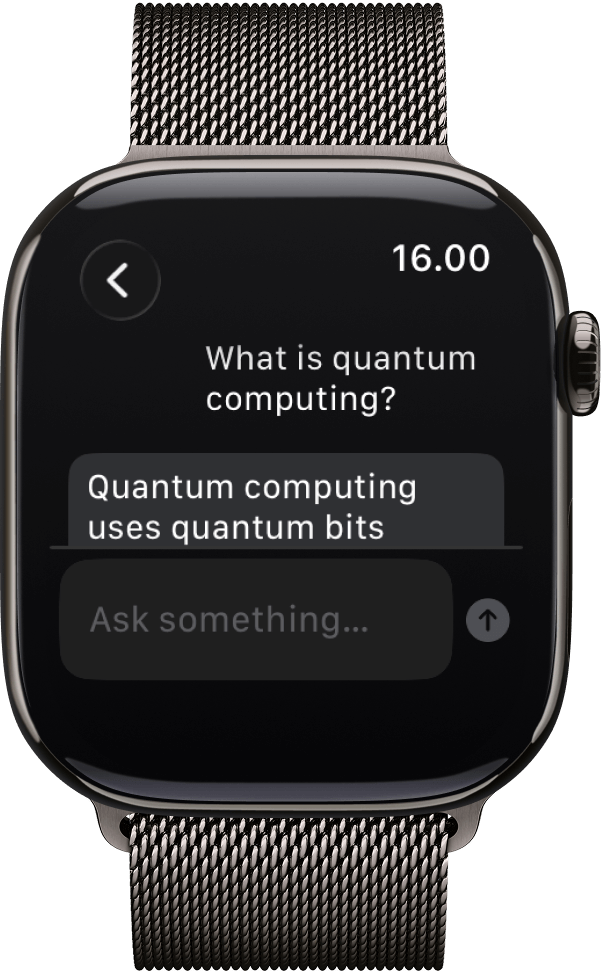

Language and tools
Chat, streaming, structured output, and tool calling.
Add private text, vision, and speech models to your software without running an inference server.
uv add nobodywho↵from nobodywho import Chat chat = Chat( 'huggingface:NobodyWho/ Qwen_Qwen3-0.6B-GGUF/ Qwen_Qwen3-0.6B-Q4_K_M.gguf' ) response = chat.ask('Is water wet?') print(response.completed())
NobodyWho runs models in the same environment as your application.
Inputs and outputs stay in local memory rather than passing through a cloud API.
No uploadInference continues on flights, in secure environments, and during network outages.
No connectionOptimized kernels use Metal, CUDA, Vulkan, integrated graphics, and mobile chips.
Local accelerationUse compatible GGUF models from Hugging Face or local storage.
EUPL-1.2
Chat, streaming, structured output, and tool calling.
Speech to text, text to speech, and voice activity detection.
Use compatible multimodal models with local image inputs.
Embeddings, reranking, and RAG in the same local runtime.

Free for individuals and companies. Open source under EUPL-1.2.